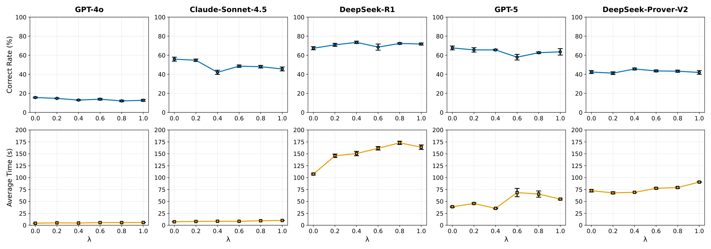

How large is this semantic-reasoning gap in formal deductive logic?
Synthesizing formal proofs using only local definitions, axioms, theorems and limited tactics within a closed theory. It is what AI needs to discover theorems in unexplored, “alien” domains. Three exclusions:
add or succ cannot be used to infer properties.linarith, simp); only fundamentals like rw and induction.Goal: quantify the performance tax of removing semantic identifiers by benchmarking LLMs on the O-NNG and the NNG.
ring.Obfuscating its names gives a zero-knowledge, closed environment.
RandomCharAug perturbs every definition, operator, axiom and theorem name, using ASCII and Lean-allowed Unicode; names stay non-empty.add_comm (a b : MyNat) : add a b = add b aadd_KmFm (a b : Mmyat) : add a b = add b aadd_Φom7 (a b : MΘNae) : add a b = add b ajad_Qηℂm (a b : οΕyab) : Εξ a b = Εξ b aμ4dA_c2o (a b : dBNaΤ) : Υdd a b = Υdd b aKΩΦzαυωT (a b : Η0Ja) : ΚxΝ a b = ΚxΝ b atheorem add_comm (a b : MyNat) : add a b = add b a := by induction b with | zero => rw [add_zero, zero_add] | succ d ih => rw [add_succ, ih, succ_add]
theorem KΩΦzαυωT (a b : Η0Ja) : ΚxΝ a b = ΚxΝ b a := by induction b with | GnΑ0 => rw [Ε6ΖΜF_Zζ, ωΙξaινη7] | Θ7Κr d ih => rw [Qγx1dtΨo, ih, gXqΧΔℝvO]
Proof structure is untouched; only the names change. The model must rely on the logical structure alone.
Addition, Implication, Algorithm, Multiplication, Power, Advanced Addition, Less-Than-or-Equal, Advanced Multiplication

Figure 1 of the paper. Error bars represent standard deviation over 5 independent runs.
| Model | Correct Rate | Average Time |
|---|---|---|
| General-purpose | ||
| GPT-4o | 0.0242* | 0.0004* |
| Claude-Sonnet-4.5 | 0.0001* | 0.0000* |
| Reasoning | ||
| DeepSeek-R1 | 0.1573 | 0.0000* |
| GPT-5 | 0.0863 | 0.0001* |
| DeepSeek-Prover-V2 | 0.3077 | 0.0000* |
* Indicates statistical significance (p < 0.05). Rows regrouped by model type; values as printed in Table 1.
Relevant to knowledge-grounded semantic agents working with incomplete or obscured semantics.
The paper frames this study as a preliminary exploration.
Longer term: synthesize entirely novel, non-standard axiomatic domains.